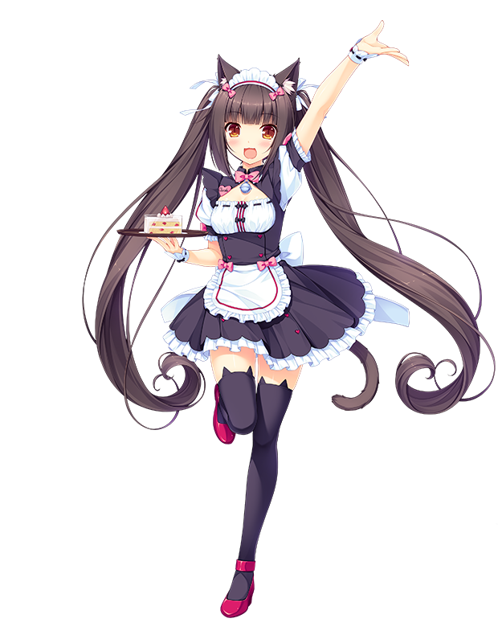
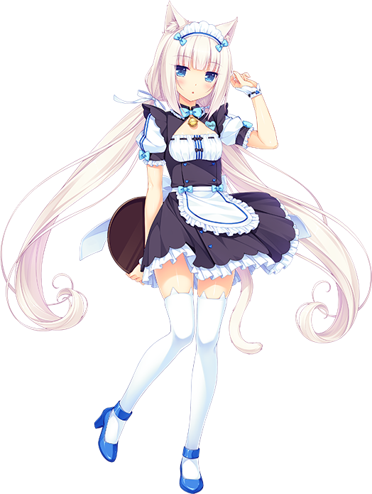
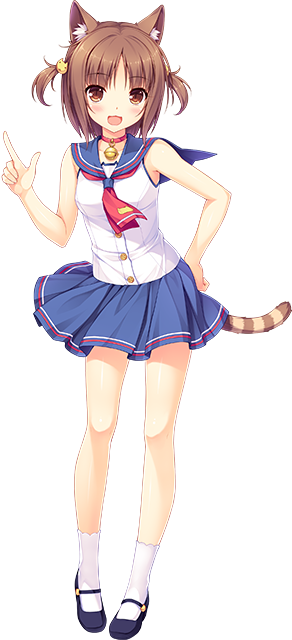
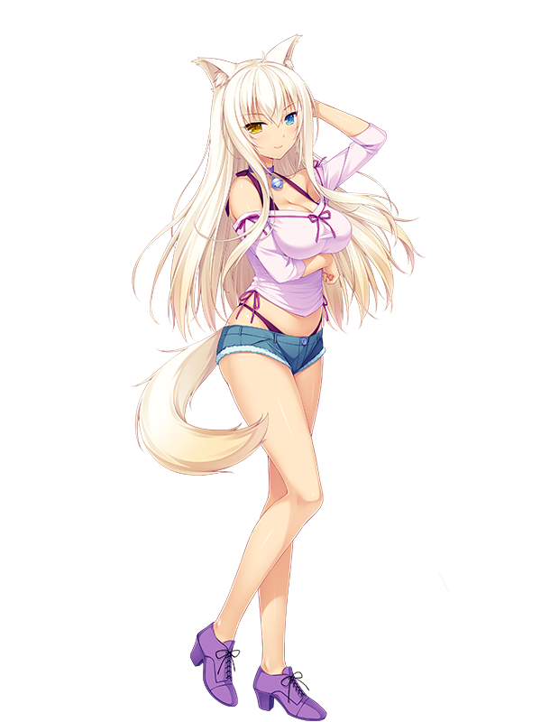
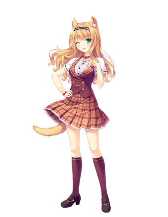
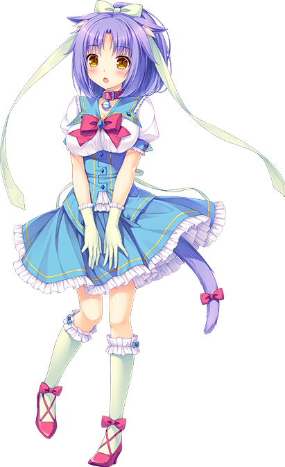
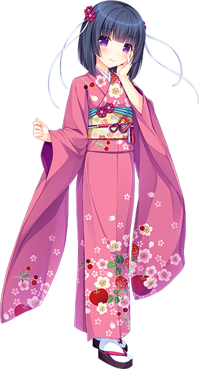
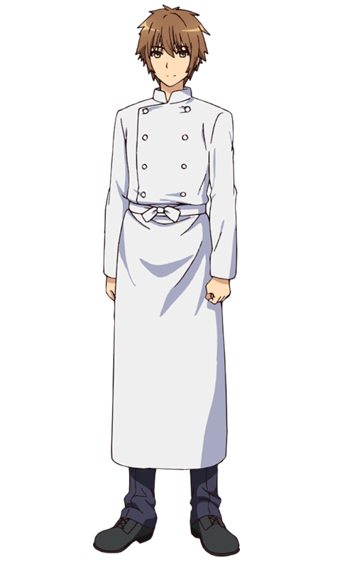

Chocola - Jest wesołą i prostolinijną kotką o psiej osobowości, która bardzo lubi swojego pana. Jest bliźniaczką Vanilli i najmłodszą z kotek Minaduki. Nie radzi sobie ze skomplikowanymi sprawami, ale zawsze jest przyjazna i pełna energii. Ma tendencję do działania, zanim w pełni przemyśli wszystko. Pomimo jej niezdarnych chwil, jej przebojowa postawa wzbudza mnóstwo miłości od wszystkich wokół niej.

Vanila - To sprytna i cicha kotka, która uwielbia czekoladę. Jest siostrą bliźniaczką Chocoli i najmłodszą z kotek Minaduki. Vanillaa ma skłonność do niezrozumienia, ponieważ rzadko wyraża swoje emocje. W rzeczywistości jest dość inteligentna i często dokonuje niezwykłych spostrzeżeń. Jej ostry dowcip i postawa „będę robić rzeczy po swojemu” sprawiają, że jest całkowitym przeciwieństwem Chocoli. Jednak pozostaje życzliwa i, no cóż, kocia.

Azuki - Jest najstarszą z kotek Minaduki. Jest nieustraszona i niefrasobliwa. Azuki nigdy nie ukrywa swojej natury. Nie boi się wyrażać swojego zdania, często kilkoma nieokrzesanymi słowami. Większość zadań jest dla niej w najlepszym przypadku uciążliwa, przez co nie ma motywacji do zrobienia czegokolwiek. Jest jednak całkiem zdolna i może zrobić prawie wszystko, jeśli zostanie zatrudniona (poza pracą fizyczną). Ma jednak kompleks związany z rozmiarem ciała. Nigdy, przenigdy nie wspominaj przy niej o „krótkich nogach”.

Coconut - To wysoka, fajna i zebrana, efektowna kotka. Pomimo swojego wzrostu jest właściwie trzecią najmłodszą z kotek Minaduki. Ma łagodny kompleks związany z niezbyt kobiecym wyglądem. Jednak jej lojalność wobec swojego pani Shigure jest ogromna. Ma niezwykłe zdolności fizyczne. Chociaż uwielbia pomagać ludziom, prawie zawsze kończy się to niepowodzeniem z powodu jej słabych zdolności koordynacyjnych.

Maple - To dumna, szybko myśląca i często arogancka kotka. Uwielbia najnowsze markowe produkty i mruczy tylko wtedy, gdy chce czegoś od Shigure. Zwykle mówi szczerze, ale zwraca uwagę na otaczających ją ludzi. Jak to się mówi, jest wystraszonym kotem, który w nocy zawsze włącza każde światło w drodze do łazienki. Ze wszystkich kotek jej język jest najbardziej wrażliwy na gorące rzeczy.

Cinnamon - jest jedną z najbardziej wyluzowanych kotek Minaduki. Jest łagodna, uprzejma i wesoła. Jednak jako kociak Cinnamon była niezwykle nieśmiała, do tego stopnia, że ukrywała się w kącie swojego pokoju i nie rozmawiała z nikim innym, dopóki Maple siłą nie zmusiła jej do wyjścia ze swojej skorupy. Z tego powodu ze wszystkich kotek Minaduki, Cinnamonn jest najbliższa Maple.

Shigure Minaduki - To młodsza siostra Kashou i właścicielka kotek Minaduki. Znacznie młodsza od Kashou, jest głęboko przywiązana do swojego starszego brata. Ma niezły talent biznesowy i potajemnie prowadzi własną firmę. Nie może jeszcze wyjść z domu, więc wspiera Kashou z cienia. Czasami wymyka się spod kontroli.

Kashou Minaduki - Jest bohaterem serii Nekopara i starszym bratem Shigure Minaduki.
Na początku serii w tajemnicy wyprowadza się z domu i otwiera cukiernię La Soleil. Kiedy po raz pierwszy wprowadza się do piekarni, Kashou odkrywa, że dwie z rodzinnych kotek, Chocola i Vanilla, poszły za nim do piekarni, chowając je w pudełkach.
Jego rodzice są rzadko wspominani, choć sugeruje się, że są z dala od siebie, podczas gdy utrzymuje przyjacielskie stosunki z Shigure.